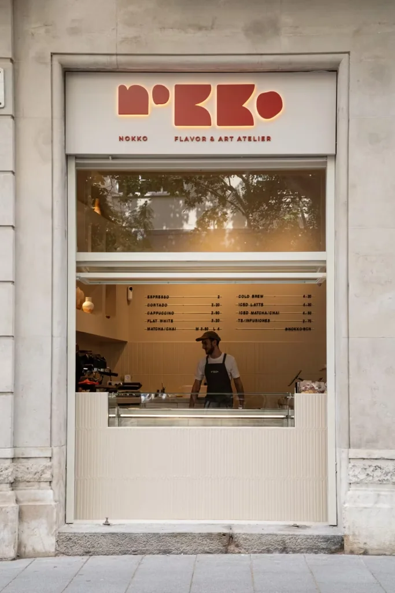
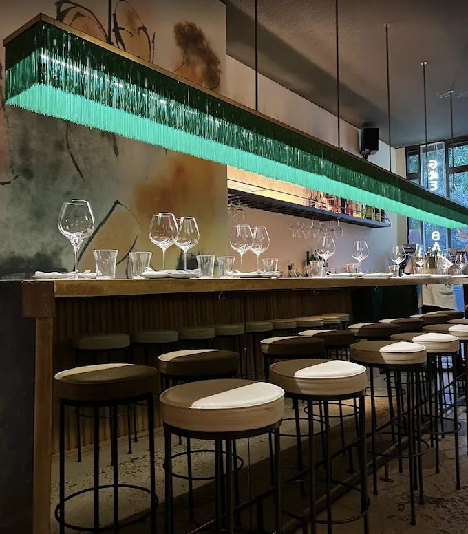
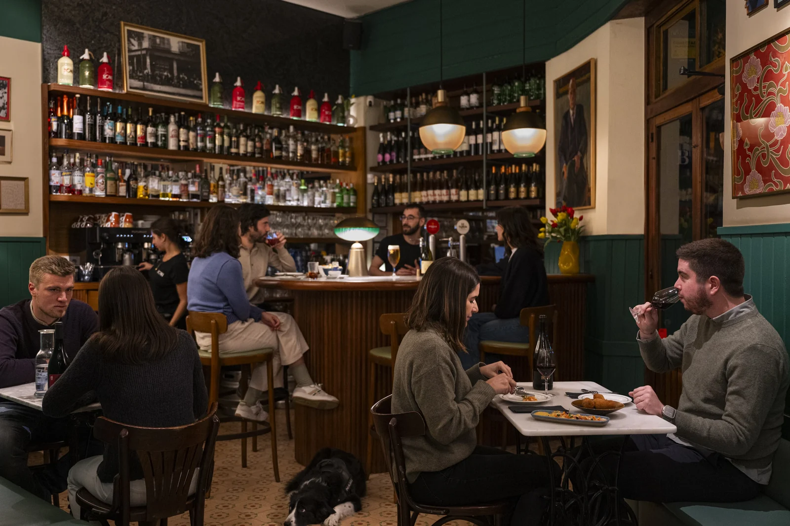
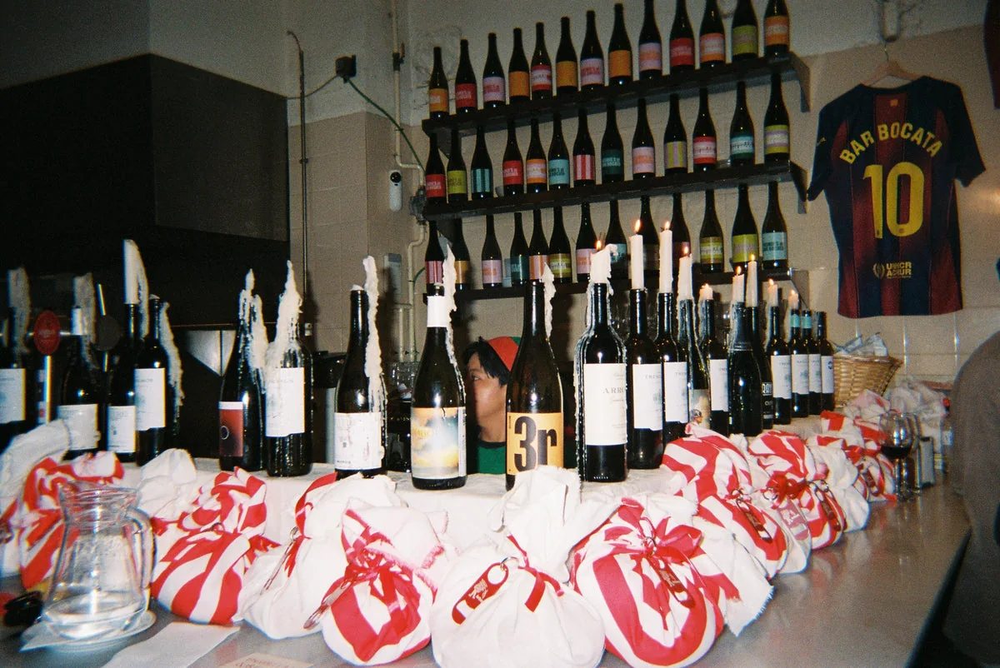
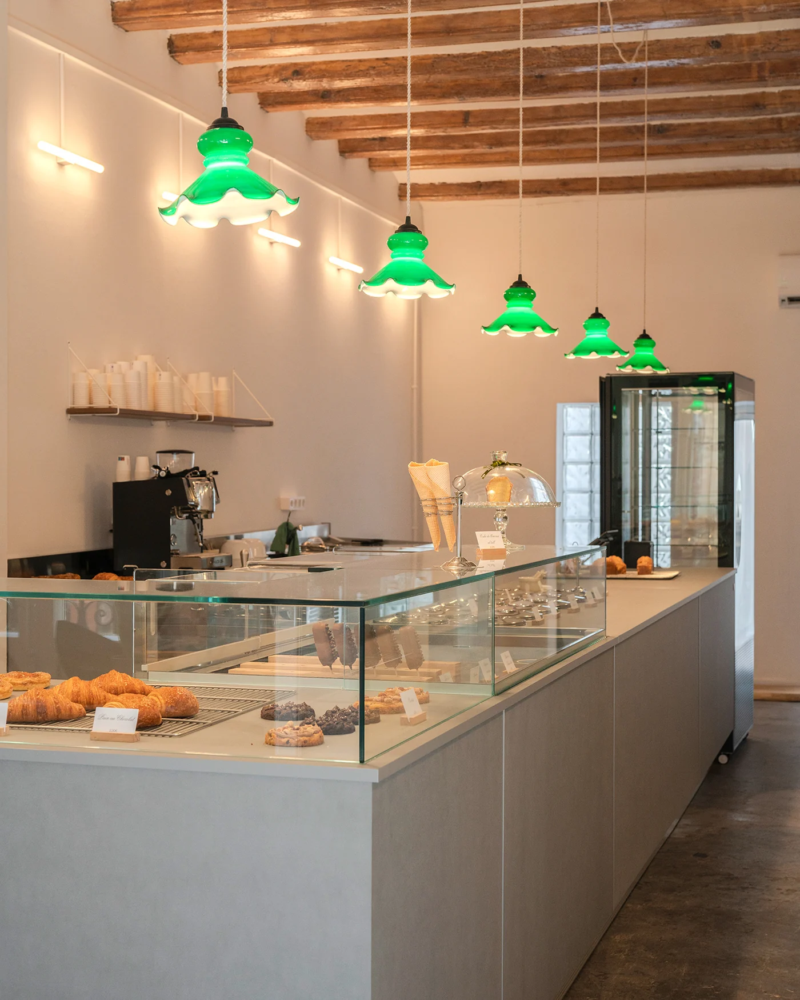

Mono Café
Specialty coffee · Poblenou
A bright, minimal corner café for specialty coffee, Japanese matcha and a quiet pause close to the creative heart of Poblenou.
City Edition · Barcelona
Mediterranean light, design-led neighbourhoods and thoughtful places to stop with your dog.
32 recommendations
Specialty coffee · Poblenou
A bright, minimal corner café for specialty coffee, Japanese matcha and a quiet pause close to the creative heart of Poblenou.
Mediterranean restaurant · Vila Olímpica
A polished waterfront restaurant with a warm bohemian interior, Mediterranean cooking and views across Port Olímpic.
CAFÉ · GRÀCIA
A serene, light-filled café with an elegant garden atmosphere in Gràcia.
HI-FI CAFÉ · EIXAMPLE
A refined listening café where specialty coffee, breakfast and carefully curated sound meet.
DOG-FRIENDLY HOTEL · LES CORTS
A polished city hotel that welcomes dogs with beds, bowls and treats.
SPECIALTY COFFEE · EIXAMPLE
A beautifully restrained neighbourhood coffee bar with excellent espresso and pastries.
COFFEE · CHOCOLATE · EIXAMPLE
A bean-to-bar chocolate workshop and specialty coffee roastery focused on traceable Peruvian origins.
SPECIALTY COFFEE · EL BORN
An Italian-inspired specialty coffee bar in El Born, pairing coffee with DJ-set energy and a genuinely pet-friendly welcome - often led by Azul, the resident therapy Golden Retriever.

Specialty coffee & artisan pastry · Eixample
Specialty coffee, handmade pastries and rotating art on Enric Granados. A thoughtful little pause in the Eixample.
Photo: NOKKO

Seasonal plates & wine · Eixample
Seasonal small plates and a considered wine list on Provença, with an open kitchen and a quietly lively bar.
Photo: Macarfi / This is Barcelona

Mediterranean kitchen · Eixample
Mediterranean cooking with an Italian accent, seasonal dishes to share and a warm neighbourhood setting on Provença.
Photo: SOMA Restaurant

Bocatas & wine · Sant Gervasi
The original BarBocata on Travessera de Gràcia: generous sandwiches, tortilla and a relaxed bar for a long lunch.
Photo: BarBocata

Pastry & ice cream · Gràcia
Artisan pastries and house-made ice cream on Carrer de Verdi. French baking meets a playful take on dessert, from vanilla flan to brioche filled with ice cream.
Images: Studio Ingrid Picanyol / Morreig.
Coffee & daytime food · Poblenou
Seasonal baking in Poblenou, from sourdough loaves and medialunas to lemon-and-cardamom babka. A good stop for something freshly baked after a neighbourhood walk.
Plaça de Julio González 3–5, 08005 Barcelona
Photography: Bárbara Bakery.
Coffee & daytime food · Gràcia
Origo’s first bakery pairs organic sourdough and handmade pastries with specialty coffee. Its bread-led approach starts with regenerative farming.
Carrer de Milà i Fontanals 9, 08012 Barcelona
Photography: Origo Bakery · Gràcia.
Coffee & daytime food · Eixample
Fresh daytime cooking and specialty coffee in a warm, design-led Eixample café. The handmade ceramics are part of La Papa’s own collection.
Carrer d’Aribau 92, 08036 Barcelona
Photography: La Papa · Aribau.
Coffee & daytime food · Sant Gervasi
A small Sant Gervasi café for specialty coffee and a pastry break, tucked into a neighbourhood corner close to Plaça de Sant Joaquim.
Carrer de Sant Hermenegild 2, 08006 Barcelona
Photography: Vannelle Canille / Vannelle Walks.
Coffee & daytime food · Poblenou
A Japanese-inspired Poblenou café for egg sandos, seasonal breakfasts and lunch. Coffee and pastries continue after the kitchen closes.
Carrer de la Ciutat de Granada 20, 08005 Barcelona
Photography: Paulina Rodriguez / Otsu.
Coffee & daytime food · Poble-sec
Austrian baking at Hotel Brummell: house-made strudel, Sachertorte and Three Marks coffee. Stay for a slow breakfast in the plant-filled atrium.
Carrer Nou de la Rambla 174, 08004 Barcelona
Photography: Žiga Mihelčič and Maria Astrand / Café Schallert.
Restaurant · Gràcia
A compact restaurant on Carrer de Minerva, built around seasonal plates, house-made sourdough and a thoughtful wine list. An intimate stop for a longer meal.
Carrer de Minerva 6, 08006 Barcelona
Photography: Berbena.
Coffee & daytime food · El Born
Jon García’s cheese-led cakes meet specialty coffee in the Born. Choose a slice of the signature cheesecake or one of the changing varieties.
Carrer de Sant Pere Més Baix 36, 08003 Barcelona
Photography: Jon Cake & Coffee.
Hotel · El Raval
A design hotel in the Raval, close to the MACBA, with relaxed shared spaces and a rooftop terrace. A central base for exploring the old city.
Contact the hotel before booking to confirm current pet-stay conditions and any fees.
Carrer d’Elisabets 11, 08001 Barcelona
Photography: Casa Camper Barcelona.
Hotel · Eixample
A restored 19th-century house on Gran Via with tiled floors, courtyard rooms and lively food-and-drink spaces. A characterful Eixample base for a city stay.
Pet-friendly stays are available. Confirm the room arrangements with the hotel before booking.
Gran Via de les Corts Catalanes 700, 08010 Barcelona
Photography: Casa Bonay.
Restaurant · Eixample
Seasonal Mediterranean plates and a considered wine list inside Casa Bonay. A low-key place to settle into an unhurried meal on Gran Via.
Dogs are welcome; confirm the seating arrangements with the team.
Gran Via de les Corts Catalanes 700, 08010 Barcelona
Photography: Bodega Bonay.
Coffee & daytime food · Gràcia
An old-style Gràcia neighbourhood bar with specialty coffee, tortilla and small plates. Come for breakfast or linger over a vermouth later in the day.
Dogs are welcome; confirm the seating arrangements with the team.
Carrer de Banyoles 11, 08012 Barcelona
Photography: Andreu Font / In and Out Barcelona.
Restaurant · Sant Antoni
Italian cooking and cocktails on Passatge de Pere Calders. Come for pasta, including its signature carbonara, in a relaxed Sant Antoni setting.
Passatge de Pere Calders 6, 08015 Barcelona
Photography: Benzina.
Coffee & daytime food · Eixample
A specialty-coffee stop on Passeig de Sant Joan, pairing carefully made coffee with pastries. A simple pause along one of the city’s best walking streets.
Dogs are welcome inside.
Passeig de Sant Joan 127, 08037 Barcelona
Photography: Time Out Barcelona.
Restaurant · Les Corts
Vegetable-led market plates and seasonal salads at Pedralbes Centre. An easy, informal stop for a fresh lunch in Les Corts.
Dogs are welcome; confirm the seating arrangements with the team.
Carrer de Joan Güell 236, 08028 Barcelona
Photography: Honest Greens · Pedralbes Centre.
Coffee & brunch · El Born
Specialty coffee, all-day brunch and resident corgis on Carrer del Comerç. Stop for pancakes before a stroll towards the Arc de Triomf.
Dogs are welcome inside on a lead, provided they are comfortable around other dogs. Water is available. The café asks visitors to respect its resident corgis’ rest.
Carrer del Comerç, 1–3, Barcelona
Photography: Corgi Café · Arc de Triomf.
Dog grooming · Poblenou
A dog grooming studio and concept store in Poblenou, with daycare, carefully chosen walking accessories and a café corner while your dog is pampered.
Dog grooming and daycare are available by appointment. Ask the team about the right service for your dog.
Carrer de la Ciutat de Granada, 159, Barcelona
Photography: Koke.
Dog grooming · Sant Gervasi
A boutique dog grooming salon beside Turó Park, with hand-scissored styling, coat treatments and baths tailored to each dog.
Dog grooming is offered for small, medium, large and giant dogs. Book a session with the salon.
Carrer de Bori i Fontestà, 7, Barcelona
Photography: Fochiko.
Dog shop · Poblenou
A Poblenou concept store devoted to dogs, with natural food, considered accessories and grooming. Browse walking gear and everyday essentials in a warm, pared-back space.
A dog concept store with grooming services; contact the team for appointments.
Carrer de Badajoz, 65, Local 2, Barcelona
Photography: Mandai Design / Breto.
A WALK WITH YOUR DOG
219 places to explore · Check local lead rules and permitted hours.
Explore dog areas →Coco’s next stop
Share the place’s name and Instagram. Coco and the Guide team will review it before it joins the Guide.